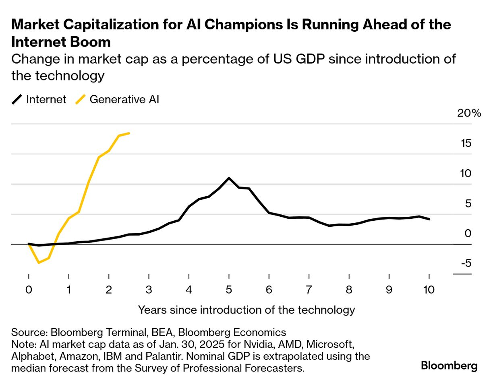
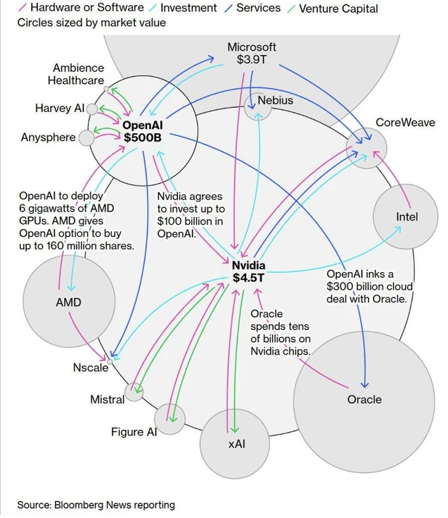

AI News
October 22, 2025
Note from Jacob:
I had to take a break from AI News posts in mid-October because we had a frost for a few nights,
which meant that the bulk of the garden needed to be harvested, and processed, and stored. Things are more relaxed again now though!
Below are links I've been collecting in the meantime.
First, some graphs:


News items:
- A few articles came out about coding with AI recently:
- “Developers’ roles are evolving from manual coders to orchestrators of AI-driven development ecosystems” The Developer Role is Evolving: Here's How to Stay Ahead
- This is one dev’s process for organizing larger changes with “Spec-driven development”: Spec-driven Development
- A16Z analysts detail the “Trillion-dollar dev stack”: Trillion Dollar Software Stack
- Steve Yegge eschewed spec-driven development to make "Beads", an issue/task tracker that your AI coding assistant can use. Beads blog post Beads Repo
- Anthropic has released "Skills" as a way for you to give Claude Code more capabilities: https://www.anthropic.com/news/skills
- Here is a repo of Skills to give your Claude Code "Superpowers": Superpowers repo
- One thing I’ve noticed with AI-assisted coding is that it is good at doing isolated small changes, but terrible when it has to do large multi-step changes across many areas of a project. My suspicion is that it is because humans are good at mentally managing nested abstractions while an LLM see all levels at the same time. I’ve experimented with developing a set of prompts to use to build-up a project spec from requirements to architecture to user stories to tasks for the AI, but even then the coding assistant still needs a bunch of supervision.
- LangChain has a post up and the authn and authz needs for AI agents: Agent Authorization Explainer
- I found a new blog today: Steipete. He is a dev writing about AI too.
- Andrej Karpathy released a new project that is a full pipeline for making a GPT-2 era clone of ChatGPT. X Tweet Nanochat Repo
- Anthropic released Haiku 4.5, which may serve you as a lower cost coding alternative: Claude Haiku 4.5 release
- A look at the true costs of deploying an AI agent at enterprise scale: The Hidden Cost of AI Agents
- From the Harvard Business Review - business use cases greatly influence why agentic AI projects fail or succeed. It specificly calls out "cybersecurity threat response" as one use case where agentic AI is indeed useful. Why Agentic AI Projects Fail and How to Set Yours up for Success